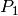
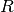
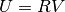
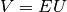
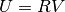
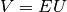

メッシュ上に有限要素法を構築します¶
getfem/getfem_mesh_fem.h で定義されているオブジェクト getfem::mesh_fem は、メッシュ全体に有限要素法を記述するために、すなわちいくつかの変数が記述される有限要素空間を記述するために設計されています。これは GetFEM++ の中心にあるかなり複雑なオブジェクトです。基本的に、この構造は、メッシュの各要素の有限要素法と、いくつかの追加のオプションの変換を記述します。 1つのメッシュに対して任意の数の有限要素法を持つことが可能です。これは、混合法には特に必要ですが、同じメッシュ上の異なるデータを記述する場合にも必要です。次のように getfem::mesh_fem オブジェクトをインスタンス化することもできます:
getfem::mesh_fem mf(mymesh);
mymesh は既に存在するメッシュです。構造はこのメッシュにリンクされ、メッシュに変更が行われると同期されます。
要素ごとに有限要素法を指定することができるので、たとえ次元が異なっていても混合型要素を扱うことができます。通常の要素では、2つの要素に互換性がある場合（共通面で同じ自由度）、2つの要素の間の接続が行われます。自由度の数値は、Cuthill Mc Keeアルゴリズムのように自動的に行われます。メッシュの頂点の数と自由度の数値との間には絶対的な関係はないことに注意してください。すべての getfem::mesh_fem オブジェクトには独自の数値があります。
getfem::mesh_fem オブジェクトには3つのレベルがあります。
要素レベル：要素ごとに1つの有限要素法。要素の次元とベクトルまたはスカラーのプロパティを混在させることは可能です。
オプションのベクトル化/テンソル化（getfemの専門用語qdim。vocabulary を参照）。例えば、連続体力学における変位またはテンソル場を表します。スカラー要素は成分単位で使用されます。ベクトル化されない固有のベクトル要素（例えば、Raviart-Thomas要素）とスカラー要素を混在させることができます。
（ GetFEM++ version 4.0）自由度のオプションの追加線形変換（縮小）。これは、2つの行列すなわち、縮小行列と拡張行列を与えます。縮小行列は、基本的な自由度を縮小された自由度に変換する必要があります（縮小された自由度の数は、基本的な自由度の数よりも少ないか等しい必要があります）。拡張行列は、逆変換を記述する必要があります。縮小行列と拡張行列との積は、単位行列でなければなりません（特に、2つの行列が最大ランクであることを保証する必要があります）。この任意の変換を使用して、有限要素空間を特定の領域（基本的に境界）に縮小したり、本来適合しない有限要素法（例えば、自由度度の異なる有限要素法）間のいくつかの一致条件を指定することができます。
getfem::mesh_fem オブジェクトの自由度を操作するこの構造を念頭に置いておく必要があります。
第1レベル：各要素の有限要素法の操作¶
特定の要素に対して特定の有限要素法を選択するメソッドは:
mf.set_finite_element(i, pf);
i は要素のインデックスで、 pf は有限要素法の記述子( getfem::pfem 型、基本的には getfem::virtual_fem から継承するオブジェクトへのポインタ)です。このメンバ関数の代わりのフォーマットは:
void mesh_fem::set_finite_element(const dal::bit_vector &cvs,
getfem::pfem pf);
void mesh_fem::set_finite_element(getfem::pfem pf);
bit_vector cvs にリストアップされた凸包、またはメッシュのすべての凸包の有限要素を設定します。最後のメソッドは次のメソッドを呼び出します:
void mesh_fem::set_auto_add(pfem pf);
これは、メッシュの新しい要素に自動的に追加されるデフォルトの有限要素法を定義します（例えば、メッシュの細分化が実行されるときに非常に便利です）。
有限要素法と積分法の記述子は、次の関数によって利用できます。
getfem::pfem pf = getfem::fem_descriptor("name of method");
既存のメソッドの中で "メソッド名" を選択する場所です。メソッドの名前は、次の関数によって取得できます:
std::string femname = getfem::name_of_fem(pf);
有限要素法の非網羅的リスト( 付録A.有限要素法リスト または getfem/getfem_fem.h を参照)は次のように与えられます:
"FEM_PK(n,k)" : 次数 k の多項式を用いた次元 n の古典的なシンプレックスの 法
"FEM_QK(n,k)": 次元nの平行6面体上の古典的 法。セグメント上の次数 k の 法のテンソルによる生成物。
"FEM_PK_PRISM(n,k)": 次元 n のプリズムに関する古典的な方法。 2次の k の
 法のテンソル積。
法のテンソル積。"FEM_PRODUCT(a,b)": 2つの多項式有限要素法 a と b のテンソル積。
"FEM_PK_DISCONTINUOUS(n,k)": 次数 k の多項式を持つ次元 n のシンプレックスに関する不連続 法。
与えられた幾何学変換に適したLagrange多項式の有限要素法を得る別の方法は:
getfem::pfem getfem::classical_fem(bgeot::pgeometric_trans pg,
short_type degree);
getfem::pfem getfem::classical_discontinuous_fem(bgeot::pgeometric_trans pg,
short_type degree);
mesh_fem は次のように直接これらの関数を呼び出すことができます
void mesh_fem::set_classical_finite_element(const dal::bit_vector &cvs,
dim_type fem_degree);
void mesh_fem::set_classical_discontinuous_finite_element(const dal::bit_vector &cvs,
dim_type fem_degree);
void mesh_fem::set_classical_finite_element(dim_type fem_degree);
void mesh_fem::set_classical_discontinuous_finite_element(dim_type fem_degree);
いくつかの他の方法:
- mf.convex_index()¶
有限要素法が定義されている索引( dal::bit_vector )の集合。
- mf.linked_mesh()¶
リンクされたメッシュへの参照を与えます。
- mf.fem_of_element(i)¶
インデックス i の要素に定義されている有限要素法の記述子を与えます（qdimもオプションの削減も考慮しない）。
- mf.clear()¶
構造をクリアし、有限要素法が定義されない状態になります。
例¶
例えば、3角形上に  有限要素法の記述が必要な場合、それを設定する方法は:
mf.set_finite_element(i, getfem::fem_descriptor("FEM_PK(2, 1)"));
ここで i はまだ単一のインデックスではなく、3角形のインデックスです。 mf.set_finite_element に dal::bit_vector を渡して、要素集合上で直接特定のメソッドを選択することもできます。例えば、
mf.set_finite_element(mymesh.convex_index(),
getfem::fem_descriptor("FEM_PK(2, 1)"));
はメッシュのすべての要素のメソッドを選択します。
第2レベル：オプションである「ベクトル化/テンソル化」¶
有限要素がベクトルフィールドである未知数を表す場合、メソッド mf.set_qdim(Q) は、ターゲットディメンション が定義しているターゲットディメンションを設定します。
対象の次元Qが 以外の値に設定されている場合、スカラFEM（ 有限要素法など）は mesh_fem オブジェクトの観点から自動的に「ベクトル化」されます。つまり、各スカラー自由度はベクトル場の 成分を表現するため 回表示されます。本質的にベクトル要素が使用される場合、 有限要素法 のターゲットディメンションと mesh_fem オブジェクトのターゲットディメンションが一致しなければなりません。要約すると、
の要素の有限要素法が本質的にベクトルFEMである場合:
mf.get_qdim() == mf.fem_of_element(i)->target_dim() && mf.nb_dof_of_element(i) == mf.fem_of_element(i).nb_dof()
もしFEMが に等しい target_dim を持つならば:
mf.nb_dof_of_element(i) == mf.get_qdim()*mf.fem_of_element(i).nb_dof()
さらに、表現されるフィールドがベクトル場の代わりにテンソル場（例えば、弾性の応力またはひずみテンソル場）である場合、テンソルの次元を以下の方法で指定することが可能です。
mf.set_qdim(dim_type M, dim_type N)
mf.set_qdim(dim_type M, dim_type N, dim_type O, dim_type P)
mf.set_qdim(const bgeot::multi_index &mii)
2次、4次、任意（但し、6に限定される）のテンソル場について、ほとんどの演算では、これは次元の積であるベクトル場を宣言するのと同じです。しかし、宣言されたテンソルの次元は、高水準の汎用構築に考慮されます。テンソル内の成分はFortranの次数で格納されることに注意してください。
このレベルでは、基本的な自由度が定義されています。 getfem::mesh_fem のいくつかのメソッドは基本的な自由度に関する情報を得ることができます：
- mf.nb_basic_dof_of_element(i)¶
インデックス i の要素の基本自由度の数を返します。
- mf.ind_basic_dof_of_element(i)¶
インデックス i の要素の基本自由度のすべてのグローバルインデックスを持つコンテナ（配列）を返します。
- mf.point_of_basic_dof(i, j)¶
インデックス i の要素上のローカルインデックス j の基本自由度点を表す bgeot::base_node を返します。
- mf.point_of_basic_dof(j)
グローバルインデックス j の基本自由度に関連する点を表す bgeot::base_node を返します。
- mf.reference_point_of_basic_dof(i, j)¶
参照要素の座標におけるインデックス i の要素上のローカルインデックス j の基本自由度に関連する点を表す bgeot::base_node を与えます。
- mf.first_convex_of_basic_dof(j)¶
グローバルインデックス j の基本自由度が定義されている最初の要素のインデックスを返します。
- mf.nb_basic_dof()¶
異なる基本自由度の総数を与えます。
- mf.get_qdim()¶
対象の次元 Q を与えます。
- mf.basic_dof_on_region(i)¶
凸包要素の集合またはインデックス i の面の集合にある基本自由度のインデックスを表す dal::bit_vector を返します（ getfem::mesh オブジェクトを参照）。
- mf.dof_on_region(i)¶
凸包の集合またはインデックス i の面の集合にある自由度のインデックスを表す dal::bit_vector を返します（ getfem::mesh オブジェクトを参照）。 mesh_femを小さくすると、対応している試行関数がこの領域上でゼロでない場合、自由度は領域上に設定されます。拡張行列は、基本と縮小の自由度間の対応付けを行うために使用されます。
第3レベル：オプションである線形（または縮小）変換¶
上述のように、自由度の線形変換を記述する2つの行列、縮小行列  および拡張行列 が提供されています。  が基本自由度のベクトルである場合、  は上述のように減少した自由度のベクトルとなります。逆に、減少した自由度のベクトル が与えられると、  は元の自由度のベクトルとなります。単純な場合、Eは単にRの転置になります。拡張行列のすべての行は疎でなければなりません。これに注意しないと、各マトリックスの構築は難しくなります！
が基本自由度のベクトルである場合、  は上述のように減少した自由度のベクトルとなります。逆に、減少した自由度のベクトル が与えられると、  は元の自由度のベクトルとなります。単純な場合、Eは単にRの転置になります。拡張行列のすべての行は疎でなければなりません。これに注意しないと、各マトリックスの構築は難しくなります！
自然条件は であり は単位行列です。
- mf.nb_dof()¶
は異なる自由度の総数を与えます。オプションの縮小が使用される場合、これは削減行列の列の数になります。それ以外の場合、基本自由度の数が返されます。
- mf.is_reduced()¶
ブール値を返します。縮小が使用されている場合はTrueです。
- mf.reduction_matrix()¶
縮小行列 にconst参照を返します。
- mf.extension_matrix()¶
縮小行列 にconst参照を返す。
- mf.set_reduction_matrices(R, E)¶
縮小行列と拡張行列を R と E と定義し、それらの使用法を検証します。
- mf.set_reduction(b)¶
はブール値です。 が偽であれば削減を取り消し、 が真であれば削除を検証します。 が真の場合は、事前に拡張行列と縮約行列を設定している必要があります。
- mf.reduce_to_basic_dof(idof)¶
idof に存在する基本自由度のみを保持するように対応する縮小行列と拡張行列を設定します。パラメータ idof は dal::bit_vector または std::set<size_type> のいずれかです。これは getfem::partial_mesh_fem オブジェクトの使用方法と同じです。
汎用的な mesh_fem の取得¶
次の関数を使うことができます:
const mesh_fem &getfem::classical_mesh_fem(const getfem::mesh &mymesh, dim_type K);
与えられた mymesh 上で次数 の古典的多項式 mesh_fem を得ることができます。 mesh_fem はリンクされたメッシュが破棄されると自動的に破棄されます。この関数によって構築されたすべての mesh_fem はキャッシュに格納されます。つまり、この関数を同じ引数で2回呼び出すと、同じ mesh_fem オブジェクトが返されます。ゆえに、決してこの mesh_fem を修正してはいけません！
partial_mesh_femオブジェクト¶
getfem_partial_mesh_fem.h ファイルで定義された getfem::partial_mesh_fem オブジェクトは getfem::mesh_fem オブジェクトを自由度の集合に減らすことができます。注目してほしいことは、これは有限要素法の完全な記述ではなく、元の getfem::mesh_fem を参照して、縮小と拡張行列を追加しているだけということです。例えば、getfem::classical_mesh_fem(mesh, K) 関数で得られた mesh_fem を縮約し、メッシュ領域（境界でもよい）上で有限要素法を得ることができます。 getfem::partial_mesh_fem は特に指定された境界条件の乗数記述を得るために使用されます。
getfem::partial_mesh_fem オブジェクトの宣言は次のとおりです:
getfem::partial_mesh_fem partial_mf(mf);
次に、適合メソッドを次のように呼び出す必要があります:
partial_mf.adapt(kept_dof, rejected_elt = dal::bit_vector());
kept_dof と rejected_elt はいくつかの dal::bit_vector です。 kept_dof は、保持される元の mesh_fem mf の自由度インデックスのリストです。 rejected_eltは getfem::partial_mesh_fem が有限要素法がないことを示す要素インデックスのリストを含むオプションのパラメータです。これは、構築中の不要な計算を避けるためです。

目次
前のトピックへ
次のトピックへ
Download
Main documentations
- GetFEM++ User documentation
- Python Interface
- Matlab Interface
- Scilab Interface
- Gmm++
- GetFEM++ project